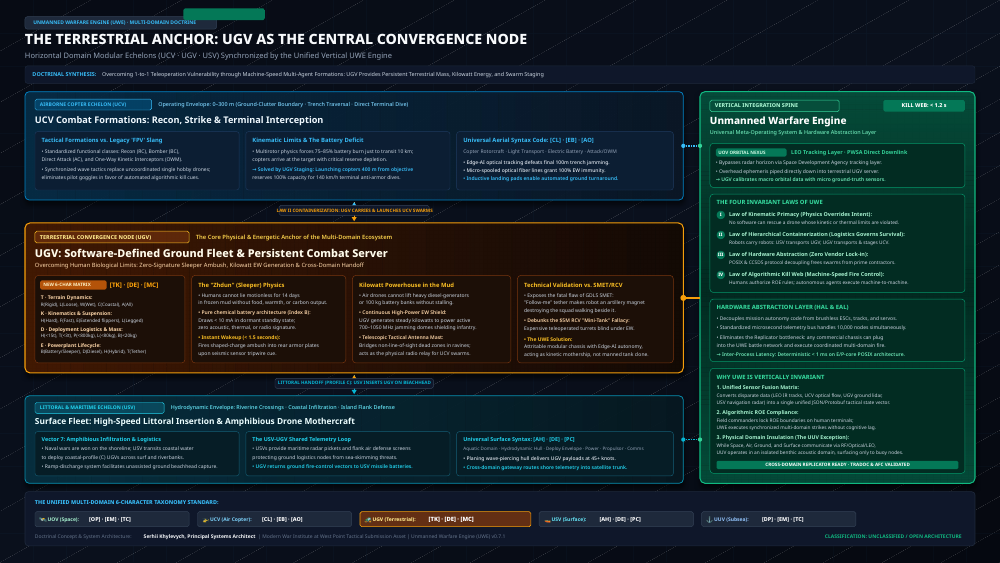

By Serhii Khylevych
Across the proving grounds of the National Training Center and during Project Convergence Capstone rotations, the visual spectacle of modern ground robotics is seductive: an infantry squad advances through a mock urban complex while an operator crouched behind cover steers an unmanned ground vehicle via a ruggedized touchscreen, suppressing a simulated bunker. To defense procurement boards, this vision represents the fulfillment of Army Futures Command’s Human-Machine Integration (HMI) concept.
To any engineer who has spent the past four years designing, patching, and fielding autonomous hardware under continuous peer bombardment in Ukraine, this vision is recognized for what it truly is: an operational illusion.
The concept of 1-to-1 teleoperation—one human operator remotely commanding one ground machine over a wireless data link—is not an emerging innovation; it is an eighty-five-year-old tactical cul-de-sac. In the winter of 1939, the Red Army deployed radio-controlled "teletanks" (TT-26 and TT-BT-7) into the Karelian Isthmus during the Winter War. Controlled via high-frequency transmitters from a trailing command tank, they were intended to clear Finnish defensive works without risking crew lives. The concept collapsed within days: shortwave signals degraded in rolling topography, boulders broke visual line-of-sight, and operators navigating through primitive periscopes repeatedly steered multi-ton machines into anti-tank ditches. Three years later, the German Wehrmacht encountered the identical physical reality with the Goliath (Sd.Kfz. 302/303) tracked demolition carrier; its wire-tethered control lines were consistently severed by artillery fragments, while its radio-directed successor, the Borgward IV, proved utterly helpless under basic line-of-sight obscuration.
When the Pentagon launched the Future Combat Systems (FCS) program in 2003, it committed over $18 billion attempting to solve this same problem through technological brute force. The Multifunction Utility/Logistics and Equipment (MULE) vehicle and the Armed Robotic Vehicle (ARV) were designed as monolithic, multi-million-dollar extensions of manned vehicles. They failed not because their code was deficient, but because they treated the robot as a teleoperated surrogate soldier rather than addressing the physical invariants of the ground domain.
Today, Western militaries are repeating this historical error. Current doctrine, including the baseline assumptions underpinning the Squad Multipurpose Equipment Transport (SMET) and the Robotic Combat Vehicle (RCV) programs, remains anchored to the "Centaur" model of human-machine teaming. In an environment dominated by high-power electronic warfare (EW) and pervasive overhead loitering munitions, 1-to-1 teleoperation fails for three unalterable physical reasons:
To break this cycle, the Army must stop treating the Unmanned Ground Vehicle (UGV) as a remote-controlled mechanical pack mule or a teleoperated mini-tank. The UGV must be re-engineered as the terrestrial convergence anchor of an integrated multi-domain ecosystem.
The primary rationale for unmanned systems is not merely risk reduction; it is operational capability. Manned fighting vehicles are severely constrained by human biology:
The fundamental architectural error of modern defense procurement is domain siloization. Air programs procure drones; ground commands procure trucks; maritime forces procure patrol craft. In modern warfare, this functional segregation is fatal.
The Unmanned Ground Vehicle is the connective tissue of the entire battle network. Airborne systems and orbital constellations possess high vantage points but lack physical persistence. A Low Earth Orbit (LEO) satellite traverses the horizon in minutes; a fixed-wing reconnaissance UAV must orbit standoff orbits to survive air defenses; tactical multirotors exhaust their energy in half an hour. Only the UGV possesses infinite terrestrial dwell time. It does not burn kilowatt-hours overcoming gravity.
The UGV anchors three distinct cross-domain interfaces:
C) UGVs across water obstacles, deploying them via bow ramps onto riverbanks and sandbars to establish anti-armor blocking positions and secure the landward flank.In current discourse, the term "FPV" is used indiscriminately to describe everything from modified racing drones to loitering munitions. This consumer hobbyist slang must be retired. Military doctrine requires precise engineering taxonomy: Unmanned Copter Vehicles (UCV), categorized by mission payload: Reconnaissance (RC), Bomber (BC), Direct Attack (AC), and One-Way Mission (OWM) kinetic interceptors.
Similarly, media buzzwords such as "swarm" obscure tactical reality. Professional military forces do not deploy unstructured swarms; they employ combat formations—synchronized echelons executing mutual support, screening, and breach maneuvers.
Under Law II of the Unmanned Warfare Engine (The Law of Hierarchical Containerization), smaller autonomous agents must be transported by larger carriers to preserve energy for the kinetic engagement. A tactical multirotor consumes 75 to 85 percent of its total battery capacity merely transiting five to eight kilometers against head-winds across a contested front line. When it reaches an enemy defensive position, its battery is depleted, leaving zero endurance to locate concealed targets or execute evasive maneuvers against trench jammers.
The UGV resolves this kinematic crisis. Acting as an armored tactical carrier and staging node, a medium UGV transports internal climate-controlled launch cassettes carrying eight to sixteen UCVs. Moving through tree lines under darkness or rolling terrain, the UGV positions itself 300 to 500 meters from the objective. Upon command, it launches a coordinated combat formation directly into the objective area. The UCVs arrive over the target with 100 percent battery reserves, capable of executing terminal dives at 140 kilometers per hour. For persistent reconnaissance, the UGV provides inductive roof-mounted recharging pads and micro-spooled optical fiber tethers, enabling uninterrupted overwatch immune to radio frequency jamming.
The accompanying tactical diagram (Figure 1) formalizes the multi-domain relationship between these horizontal operating layers and the unifying software backbone.

Figure 1: Cross-Domain Tactical Synchronization: UCV (Airborne Echelon), UGV (Terrestrial Anchor), and USV (Littoral Echelon) unified through the vertical Unmanned Warfare Engine (UWE) software backbone.
As depicted in Figure 1, the architecture is organized into three horizontal domain modules and a single vertical integration spine:
To enable Army Futures Command and TRADOC doctrine writers to evaluate ground robotic platforms without relying on vendor marketing, the Unmanned Warfare Engine introduces the Universal 6-Character UGV Taxonomy: [TK]-[DE]-[MC].
Mirrored across the UOV ([OP]-[EM]-[TC]), USV ([AH]-[DE]-[PC]), and UUV ([DP]-[EM]-[TC]) standards, each character defines a single objective engineering parameter:
T)R (Rigid): Solid rock, fractured concrete, urban rubble, paved surfaces.L (Loose): Dry sand, gravel scree, uncompacted soil, slag heaps.W (Wet): Saturated clay, peat bogs, marshland, standing water (≤ 0.8m).M (Mixed-Dry): Cross-over profile (R + L) resistant to track-shedding on shattered brick.C (Coastal): Littoral cross-over profile (L + W) for surf zones and mudbanks—the amphibious link to USV.A (All-Terrain): Universal combat mobility (80km/h Rigid, 40km/h Loose, 20km/h Wet).K)H (Hard): Heavy-duty unsprung or rigid suspension for armored shock resistance.F (Fast): Independent damped suspension for high-speed cross-country stability.E (Extended): Articulated climbing flippers for vertical step and trench obstacle traversal.S (Semi-Adaptive): Variable ground clearance for static belly-down concealment ("Zhdun" mode).A (Adaptive): Active multi-jointed kinematics that morph geometry during locomotion.L (Legged): Quadruped or biped biomimetic articulated limbs for subterranean and trench networks.D)H (Heavy): Up to 15,000kg (transported via heavy equipment trailers).T (Truck): Up to 3,000kg (standard tactical cargo truck or IFV bay).P (Pickup): Up to 800kg (flatbed pickup truck or tactical trailer).L (Light): Up to 80kg (ATVs, buggies, or armored vehicle exterior racks).B (Backpack): Up to 20kg (individual infantry rucksack module).U (Utility): Up to 5kg (vest-carried micro-reconnaissance rovers).E)B (Battery): Pure chemical electric storage (Li-Ion/LiFePO4). Baseline for zero-emission sleeper holds.D (Diesel): Compression-ignition heavy fuel engine. NATO fuel interoperability and extreme torque.G (Gasoline): High-RPM spark ignition for high power-to-weight field generators.H (Hybrid): Combustion generator combined with buffer traction batteries for silent sprint capability.T (Tethered): Micro-wire continuous external electrical feed for indefinite static defense.M)K (Kinetic Strike): Remote weapon station (RWS), anti-tank guided missiles, or breaching demolition charge.C (Carrier Mothership): Internal launch bays and inductive charging pads for UCV combat formations.L (Logistics & CASEVAC): Armored casualty evacuation pod and automated ammunition pallet conveyance.E (Engineering): Mine-clearing rollers, line-charge launchers (MICLIC), and obstacle clearance plows.W (Electronic Warfare): High-power localized RF jamming dome and counter-UAS emitter array.S (Surveillance & Acquisition): Telescopic multispectral mast, ground lidar, seismic sensors, and laser designators.C)S (Space Uplink): Direct LEO satellite transceiver (PWSA / Starlink) with automated orbital downlinks.M (Tactical MESH Relay): Ad-hoc multi-hop broadband RF node providing persistent air-ground relay.O (Optical / Fiber Tether): Spooled fiber-optic cable granting 100 percent immunity to electromagnetic jamming.A (Autonomous Edge-AI): Full radio silence; onboard inertial dead reckoning and visual SLAM navigation.G (Cross-Domain Gateway): Integrated router synchronizing telemetry across USV, UCV, and UOV networks.Through this 6-character baseline, Army leadership can objectively evaluate why programs like SMET encounter severe tactical friction:
M) or an autonomous standoff profile (C) becomes a liability. A 1,500kg vehicle trailing thirty meters behind an infantry squad acts as a visual and thermal target indicator, drawing artillery and loitering strikes onto the very soldiers it was intended to unburden.C) for expendable copters and a high-power energy donor (E), distributing combat effects across multiple distributed nodes.In FM 3-0 Operations, the U.S. Army emphasizes that victory in Multi-Domain Operations depends on creating multiple dilemmas for an adversary faster than they can react. Yet, so long as ground robotics remain tethered to the cognitive bandwidth and survival instincts of individual human teleoperators, our tactical tempo remains bounded by human neurological limits.
The war in Ukraine has demonstrated that the sensor-rich kill zone is an unforgiving filter. Machines piloted through consumer goggles and individual joysticks cannot achieve massed, synchronized breakthroughs against integrated defenses. The path forward does not require abandoning our field manuals; it requires anchoring our doctrine in physical reality.
By transitioning from 1-to-1 teleoperated gizmos to the Unmanned Warfare Engine architecture, the Army can field ground systems that leverage their true physical advantages: infinite terrestrial dwell time, biological immunity, kilowatt energy generation, and the ability to stage massed air and surface formations directly at the point of friction. The autonomous trench is not a futuristic concept; it is an immediate physical imperative.
Serhii Khylevych is a Principal Systems Architect specializing in autonomous multi-domain combat ecosystems, cyber-physical architectures, and real-time telemetry protocols. Over four years of frontline engineering integration under active bombardment in Ukraine, he has architected open software frameworks and standardized classifications spanning orbital, aerial, terrestrial, and maritime unmanned vehicles. He is the creator of the Unmanned Warfare Engine (UWE).